20260903-08 Modeling and Scaling¶
Performance Modeling¶
Models give is a conceptual and roughly quantitative framework by which to answer the following types of questions.
Why is an implementation exhibiting its observed performance?
How will performance change if we:
optimize this component?
buy new hardware? (Which new hardware?)
run a different configuration?
While conceptualizing a new algorithm, what performance can we expect and what will be bottlenecks?
Models are a guide for performance, but not an absolute.
Terms¶
Symbol |
Meaning |
|---|---|
\(n\) |
Input parameter related to problem size |
\(W\) |
Amount of work to solve problem \(n\) |
\(T\) |
Execution time |
\(R\) |
Rate at which work is done |
Measuring work¶
STREAM Triad:
for (i=0; i<n; i++)
a[i] = b[i] + scalar*c[i];
\(n\) is the array size.
Two ways of measuring “work”.
Compute: How many FLOPs are we doing?
Rate \(R=W/T\) is FLOP/s
Memory: How much memory are we transfering?
Rate \(R=W/T\) is bytes/s (usually MB/s)
Dense matrix multiplication¶
To perform the operation \(C \gets C + A B\) where \(A,B,C\) are \(n\times n\) matrices.
for (i=0; i<n; i++)
for (j=0; j<n; j++)
for (k=0; k<n; k++)
c[i*n+j] += a[i*n+k] * b[k*n+j];
Can you identify two expressions for the total amount of work \(W(n)\) and the associated units?
Can you think of a context in which one is better than the other and vice-versa?
Compute: \(W = \mathcal{O}(n^3)\)
Memory: \(W = \mathcal{O}(n^2)\) (when done with care)
Estimating time¶
To estimate time, we need to know how fast hardware executes flops and moves bytes.
[2]:
%matplotlib inline
import matplotlib.pyplot as plt
import pandas
import numpy as np
# plt.style.use('seaborn')
hardware = pandas.read_csv('data-intel.csv', index_col="Name")
hardware
[2]:
| Year | GFLOPs-SP | GFLOPs-DP | Cores | Mem-GBps | TDP | Freq(MHz) | |
|---|---|---|---|---|---|---|---|
| Name | |||||||
| Xeon X5482 | 2007 | 102 | 51 | 4 | 26 | 150 | 3200 |
| Xeon X5492 | 2008 | 108 | 54 | 4 | 26 | 150 | 3400 |
| Xeon W5590 | 2009 | 106 | 53 | 4 | 32 | 130 | 3300 |
| Xeon X5680 | 2010 | 160 | 80 | 6 | 32 | 130 | 3300 |
| Xeon X5690 | 2011 | 166 | 83 | 6 | 32 | 130 | 3470 |
| Xeon E5-2690 | 2012 | 372 | 186 | 8 | 51 | 135 | 2900 |
| Xeon E5-2697 v2 | 2013 | 518 | 259 | 12 | 60 | 130 | 2700 |
| Xeon E5-2699 v3 | 2014 | 1324 | 662 | 18 | 68 | 145 | 2300 |
| Xeon E5-2699 v3 | 2015 | 1324 | 662 | 18 | 68 | 145 | 2300 |
| Xeon E5-2699 v4 | 2016 | 1548 | 774 | 22 | 77 | 145 | 2200 |
| Xeon Platinum 8180 | 2017 | 4480 | 2240 | 28 | 120 | 205 | 2500 |
| EPYC 7742 | 2019 | 6960 | 3480 | 64 | 204 | 225 | 2250 |
| EPYC 7763 | 2021 | 7170 | 3580 | 64 | 204 | 280 | 2450 |
| EPYC 9754 | 2023 | 12700 | 6350 | 128 | 460 | 360 | 2250 |
[13]:
fig = hardware.plot(x='GFLOPs-DP', y='Mem-GBps', marker='o')
fig.set_xlim(left=0)
fig.set_ylim(bottom=0);
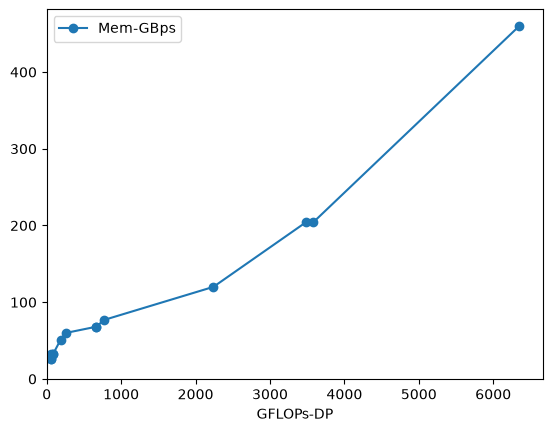
So we have rates \(R_f = 4660 \cdot 10^9\) flops/second and \(R_m = 175 \cdot 10^9\) bytes/second. Now we need to characterize some algorithms.
[3]:
algs = pandas.read_csv('algs.csv', index_col='Name')
algs['intensity'] = algs['flops'] / algs['bytes']
algs = algs.sort_values('intensity')
algs
[3]:
| bytes | flops | intensity | |
|---|---|---|---|
| Name | |||
| Triad | 24 | 2 | 0.083333 |
| SpMV | 12 | 2 | 0.166667 |
| Stencil27-cache | 24 | 54 | 2.250000 |
| MatFree-FEM | 2376 | 15228 | 6.409091 |
| Stencil27-ideal | 8 | 54 | 6.750000 |
[7]:
def exec_time(machine, alg, n):
bytes = n * alg.bytes
flops = n * alg.flops
T_mem = bytes / (machine['Mem-GBps'] * 1e9)
T_flops = flops / (machine['GFLOPs-DP'] * 1e9)
return max(T_mem, T_flops)
exec_time(hardware.loc['EPYC 9754'], algs.loc['Triad'], 1e9)
[7]:
np.float64(0.05217391304347826)
[16]:
for _, machine in hardware.iterrows():
for _, alg in algs.iterrows():
ns = np.geomspace(1e4, 1e9, 10)
times = np.array([exec_time(machine, alg, n) for n in ns])
flops = np.array([alg.flops * n for n in ns])
rates = flops/times
plt.loglog(ns, rates, 'o-')
plt.xlabel('size of work (n)')
plt.ylabel('FLOP/s');
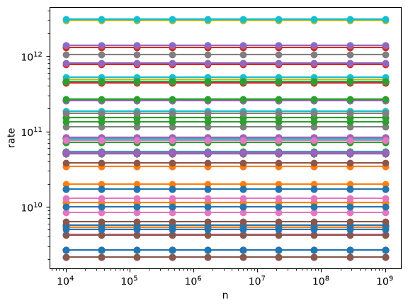
It looks like performance does not depend on problem size.
Well, yeah, we chose a model in which flops and bytes were both proportional to \(n\), and our machine model has no sense of cache hierarchy or latency, so time is also proportional to \(n\). We can divide through by \(n\) and yield a more illuminating plot.
[32]:
def MorphRangeTo01(value, range, morph_range = [0, 0.95]):
return ((value - range[0]) / (range[-1] - range[0])) * (morph_range[1] - morph_range[0]) + morph_range[0]
for _, machine in hardware.iterrows():
color = plt.cm.turbo_r(MorphRangeTo01(machine["Year"], [hardware["Year"].min(),hardware["Year"].max()]))
times = np.array([exec_time(machine, alg, 1)
for _, alg in algs.iterrows()])
rates = algs.flops/times
intensities = algs.intensity
plt.loglog(intensities, rates, 'o-', label=machine.name, color=color)
plt.xlabel('intensity')
plt.ylabel('rate')
# plt.legend();
[32]:
Text(0, 0.5, 'rate')
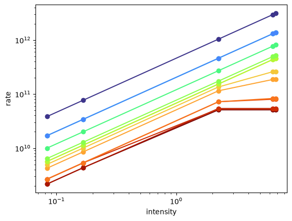
We’re seeing the “roofline” for the older processors while the newer models are memory bandwidth limited for all of these algorithms.
Recommended reading on single-node performance modeling¶
Scaling: Programs with more than one part¶
So far, we’ve focused on simple programs with only one part, but real programs have several different parts, often with data dependencies. Some parts will be amenable to optimization and/or parallelism and others will not.

The best possible performance you get with parallelization is governed by Amdahl’s Law.
[68]:
def exec_time(f, p, n=100, latency=1):
# Suppose that a fraction f of the total work is amenable to optimization
# We run a problem size n with parallelization factor p
return latency + (1-f)*n + f*n/p
Symbol |
Meaning |
|---|---|
\(T\) |
Time taken to run |
\(\ell\) |
Latency (startup time and time waiting for communication) |
\(f\) |
Fraction of work that is parallelizable |
\(n\) |
Amount of work |
\(p\) |
Total processes parallelized over |
[77]:
%matplotlib inline
import matplotlib.pyplot as plt
import pandas
import numpy as np
ps = np.geomspace(1, 1000)
plt.loglog(ps, exec_time(.98, ps, latency=0), label="\"real\"")
plt.loglog(ps, exec_time(1, ps, latency=1), label="ideal")
plt.title('Execution time with increased parallelization')
plt.xlabel('"processors"')
plt.ylabel('time')
plt.grid()
plt.legend();
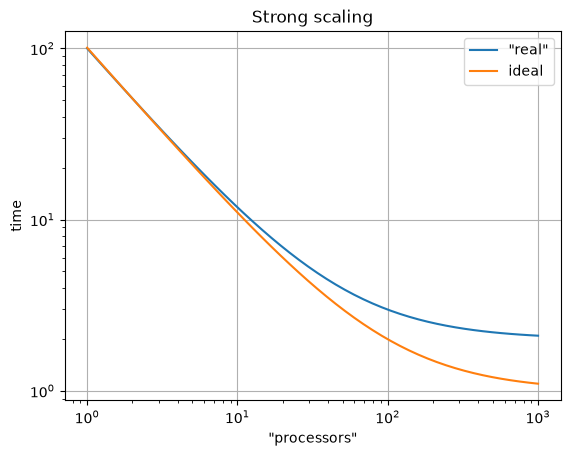
Strong scaling: fixed total problem size¶
Good strong scaling == being able to go faster at the same cost (assuming you have the resources)
This is the one we all want, but is really difficult to get
Cost = time * p¶
Often compute allocations are given in terms of “node-hours” or “CPU-hours”
Therefore, we must balance total execution time with cost
We can use more resources simultaneously to go faster, and thus use those resources for a smaller amount of time
But without perfect scalability, using more resources increases costs due to inefficiencies
[82]:
def exec_cost(f, p, **kwargs):
return exec_time(f, p, **kwargs) * p
plt.loglog(ps, exec_cost(1, ps, latency=), label='"real"')
plt.loglog(ps, exec_cost(1, ps, latency=0), label='ideal')
plt.title('Strong scaling')
plt.xlabel('"processors"')
plt.ylabel('cost')
plt.legend()
plt.grid();
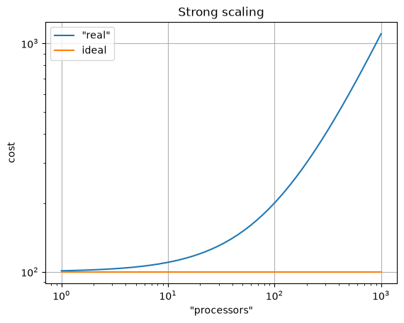
Efficiency¶
We will ignore the \(n\), as it’s difficult to quantify in real life the units of “problem size” in a way that makes sense
[83]:
plt.semilogx(ps, 1/exec_cost(.9999, ps, latency=1), label='"real"')
plt.semilogx(ps, 1/exec_cost(1, ps, latency=0), label='ideal')
plt.title('Strong scaling')
plt.xlabel('p')
plt.ylabel('efficiency')
plt.legend()
plt.ylim(bottom=0);
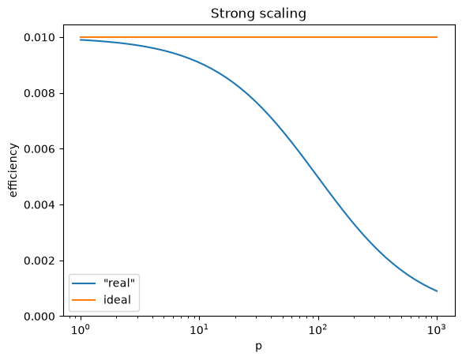
Speedup¶
[86]:
plt.plot(ps, exec_time(.99, 1, latency=1) / exec_time(.99, ps, latency=1), label='"real"')
plt.plot(ps, exec_time(1, 1, latency=.0) / exec_time(1, ps, latency=0), label='nearly ideal (with latency)')
plt.title('Strong scaling')
plt.xlabel('p')
plt.ylabel('speedup')
plt.legend()
plt.ylim(bottom=0);
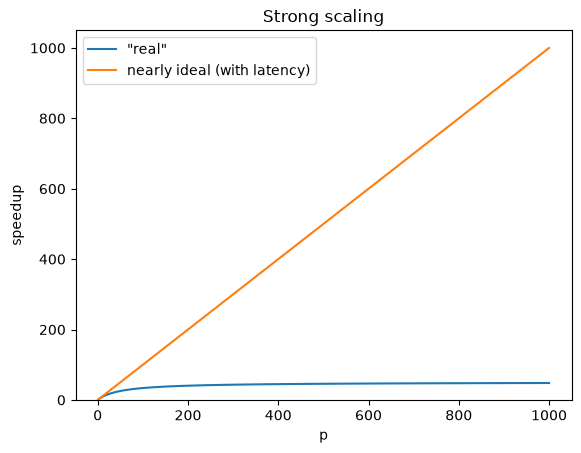
Stunt 1: Report speedup, not absolute performance!¶
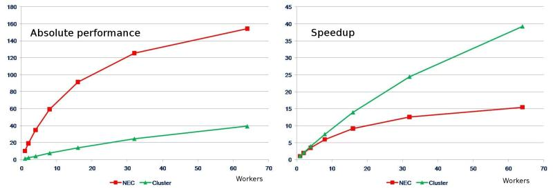
From https://blogs.fau.de/hager/archives/5299
Also see Stunt 2 for related discussion
Strong scaling looks really good when the serial part is really inefficient
Efficiency-Time spectrum (Jed’s preference)¶
People care about two observable properties
Time until job completes
Cost in core-hours or dollars to do job
Together, they show the balance of “How much extra do I need to pay to go X amount faster?”.
Most HPC applications have access to large machines, so don’t really care how many processes they use for any given job.
[53]:
plt.plot(exec_time(.99, ps), 1/exec_cost(.99, ps), 'o-', label='"real"')
plt.plot(exec_time(1, ps, latency=0), 1/exec_cost(1, ps, latency=0), 'o-', label="ideal")
plt.title('Strong scaling')
plt.xlabel('time')
plt.ylabel('efficiency')
plt.ylim(bottom=0);
plt.legend();
plt.xlim(left=0);
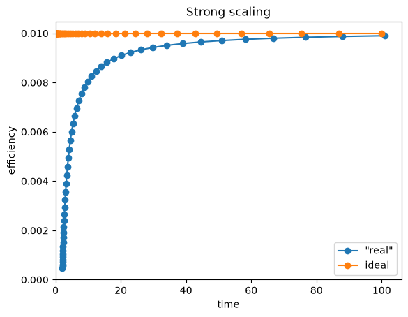
Principles of reporting scaling and performance¶
No “soft” ``log` scale <https://blogs.fau.de/hager/archives/5835>`__
Both axes have tangible units
Bigger is better on the \(y\) axis
Makes it easier to understand what is doing better than something else
Weak Scaling: Fixed work per processor¶
We’ve kept the problem size \(n\) fixed thus far, but parallel computers are also used to solve large problems.
If we keep the amount of work per processor fixed, we are weak/Gustafson scaling.
If strong scaling says we can go faster, weak scaling says we can go bigger
If we increase our problem size by N times and use N times the resources, do we take the same amount of time to compute?
A different target, much easier to hit (not impacted by latency as much
[58]:
ns = 10*ps
plt.semilogx(ps, exec_time(.99, ps, n=ns, latency=1), 'o-', label="small $n/p$")
ns = 100*ps
plt.semilogx(ps, exec_time(.99, ps, n=ns, latency=1), 's-', label="large $n/p$")
plt.title('Weak scaling')
plt.xlabel('procs')
plt.ylabel('time')
plt.legend()
plt.ylim(bottom=0);
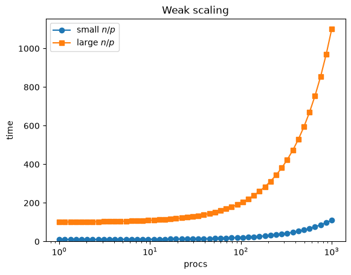
Weak scaling via efficiency¶
[64]:
ns = 10*ps
plt.semilogx(ps, ns/exec_cost(.99, ps, n=ns, latency=1), 'o-', label="small $n/p$")
ns = 100*ps
plt.semilogx(ps, ns/exec_cost(.99, ps, n=ns, latency=1), 's-', label="large $n/p$")
plt.title('Weak scaling')
plt.xlabel('procs')
plt.ylabel('efficiency')
plt.legend()
plt.ylim(bottom=0);
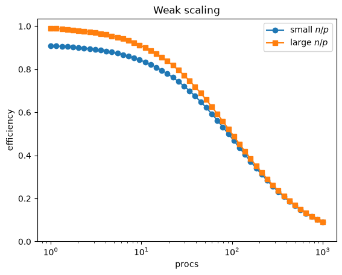
Recall
The latency term is constant when \(n/p\) is fixed
\(E\) is only really sensitive to the parallelizablility
[132]:
ns = 100*ps
plt.semilogx(ps, ns/exec_cost(.95, ps, n=ns, latency=1), 's-', label="real")
plt.semilogx(ps, ns/exec_cost(.99, ps, n=ns, latency=3), 's-', label="ideal")
plt.title('Weak scaling')
plt.xlabel('procs')
plt.ylabel('efficiency')
plt.legend()
plt.ylim(bottom=0);
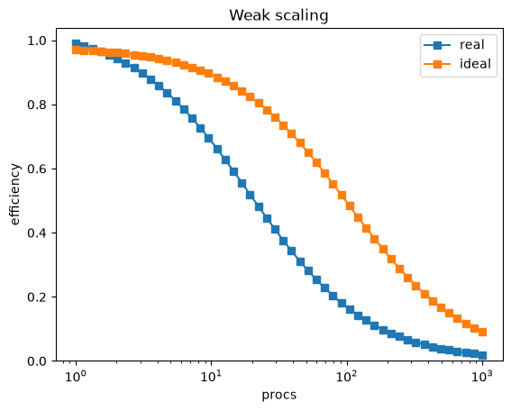
On real machines, latency is often also a function of \(p\); increased network traffic, network topology, different communication standards used depending on hardware (is \(p\) on a single node of a machine? A single CPU socket?)
[127]:
def MorphRangeTo01(value, range, morph_range = [0, 0.95]):
return ((value - range[0]) / (range[-1] - range[0])) * (morph_range[1] - morph_range[0]) + morph_range[0]
ws = np.geomspace(0.1, 1e3, 20) # problem size per processor
exec_time_kwargs = {'f': 0.99, 'latency': 1}
for p in ps:
ns = ws*p
color = 'k'
plt.semilogx(exec_time(p=p, n=ns, **exec_time_kwargs),
ns/exec_cost(p=p, n=ns, **exec_time_kwargs), color=color, linewidth=0.25, zorder=-10)
for w in ws:
ns = w*ps
color = plt.cm.turbo(MorphRangeTo01(np.log(w), np.log([ws.min(),ws.max()])))
plt.semilogx(exec_time(p=ps, n=ns, **exec_time_kwargs),
ns/exec_cost(p=ps, n=ns, **exec_time_kwargs), '-', color=color)
plt.scatter(exec_time(p=ps, n=ns, **exec_time_kwargs),
ns/exec_cost(p=ps, n=ns, **exec_time_kwargs), marker='o', color=color, s = 70*MorphRangeTo01(np.log(ps), np.log([ps.min(),ps.max()]))**2)
plt.title('Weak scaling')
plt.xlabel('time')
plt.ylabel('efficiency')
plt.ylim(bottom=0);
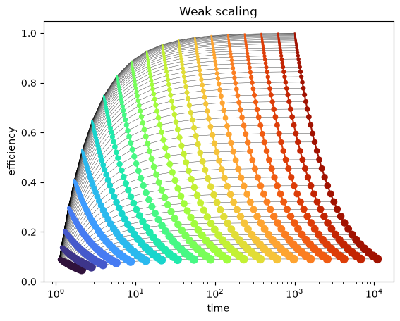
Colors are fixed work-per-processor (red large, blue small)
Dot size relates to number processors
e.g.
“Vertical” lines are constant work-pre-processor
“Horizontal” lines are constant processor count
Efficiency sensitive to number of processors
Time sensitive to work-per-processor
Weak vs Strong scaling summary¶
Thing |
Strong Scaling |
Weak Scaling |
|---|---|---|
Fixes |
Problem size |
Problem size-per processor |
Most sensitive to… |
latency |
parallelizability |
Answers “If I have more resources, …” |
how much faster can I run efficiently? |
how much larger (of a problem) can I run efficiently? |
Both have to establish what a representative problem size is.
Strong scaling has to set an initial problem size
Weak scaling needs to set a size-per-processor
Plenty of shenanigans can be had when deciding what the “representative” problem size is.
“Normal” scaling metrics are not always the best¶
From Fuhrer et al (2018): Near-global climate simulation at 1 km resolution
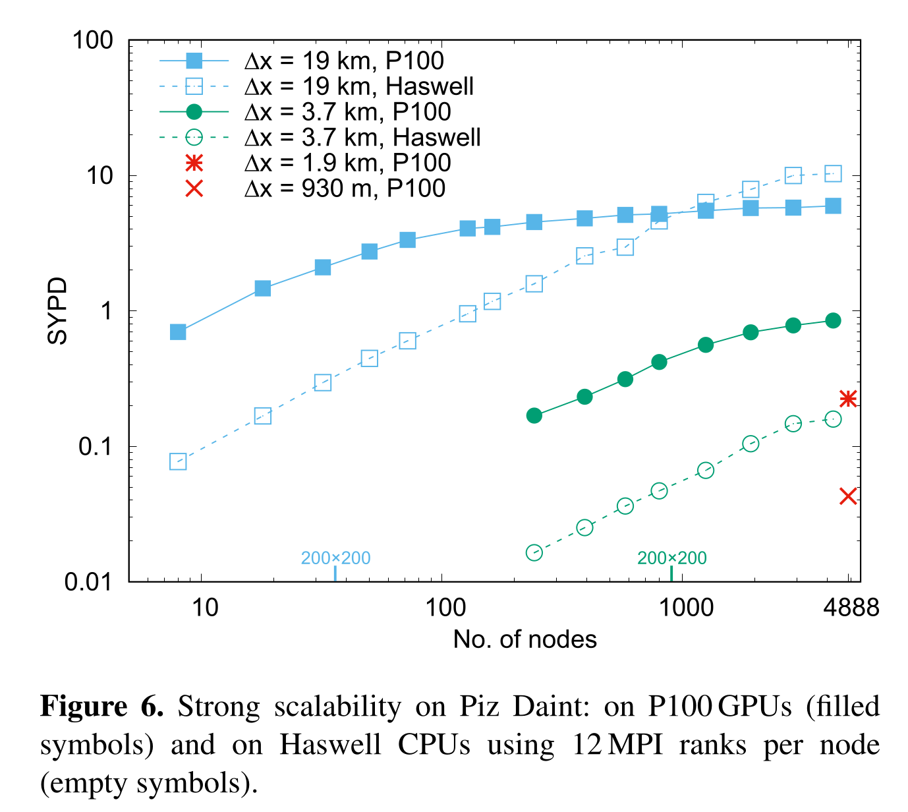
Goal is to have 1 simulated year-per-day (SYMD, the rate of computation) at a 1km resolution (effectively the size of the problem).
This plot seems to show that GPUs get us closer to that goal.
Jed replotted these data for his talk at the Latsis Symposium in 2019.
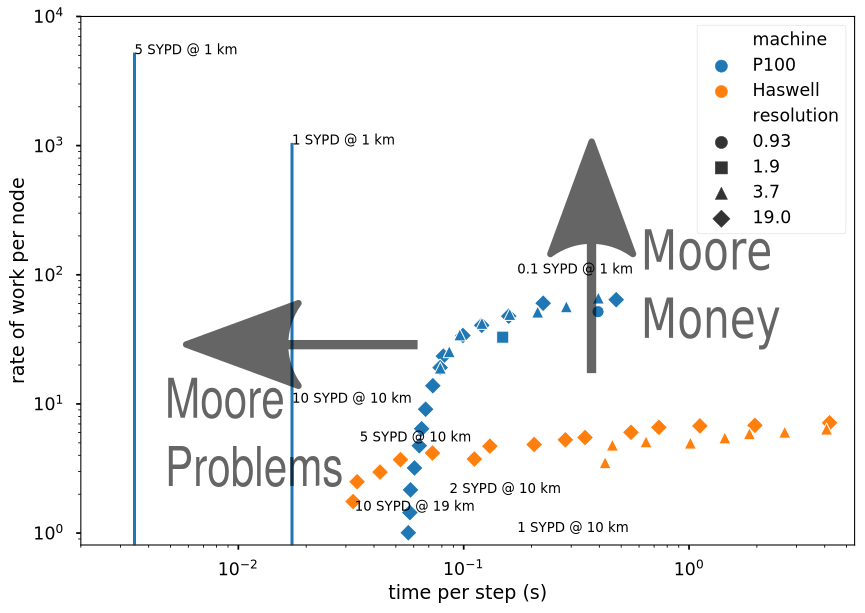
By examing the properties of the problem more specifically, we get a much better informed understanding of how the performance of the code translates into tangible.
The climate simulation splits the “simulated year” into individual steps
The higher the physical resolution (e.g. 1km), the smaller the steps must be (and the more number of steps in a single “simulated year”)
With the goal of doing a simulated year per (wall-clock) day, we can compute the time necessary to complete each step
This is the x axis “time per step”
The y-axis is the amount of compute done per node
This is effectively the \(n/p\) quantity for weak scaling
Latency is the much more significant bottle neck for these computations them outright compute
GPUs aren’t really the answer
Moore Money
We can always buy more processors/GPUs to get more compute capability
Moore Problems
There a limit for how low latency penalty can take when communicating between parallel processors
This is physics problem, not a technological one
This highlights the need for different approaches for solving the problem, not different implementations (e.g. better algorithms for hardware)
Jed specifically focuses on using a different time discretization scheme which allows for less steps for a single simulated year (and thus reducing the required “time per step” necessary to reach 1 SYPD @ 1km)
This issue is very similar to the so-called LES Crisis on the more engineering side of HPC.
Further resources¶
-
Learn by counter-examples
Hoefler and Belli: Scientific Benchmarking of Parallel Computing Systems
Recommended best practices, especially for dealing with performance variability